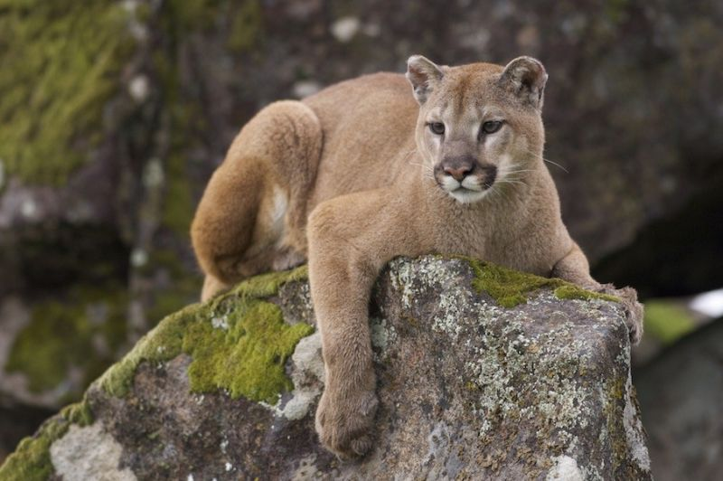
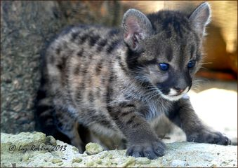
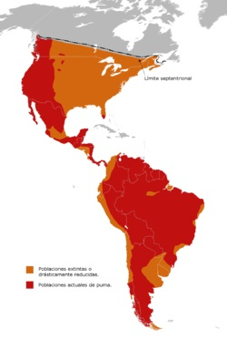
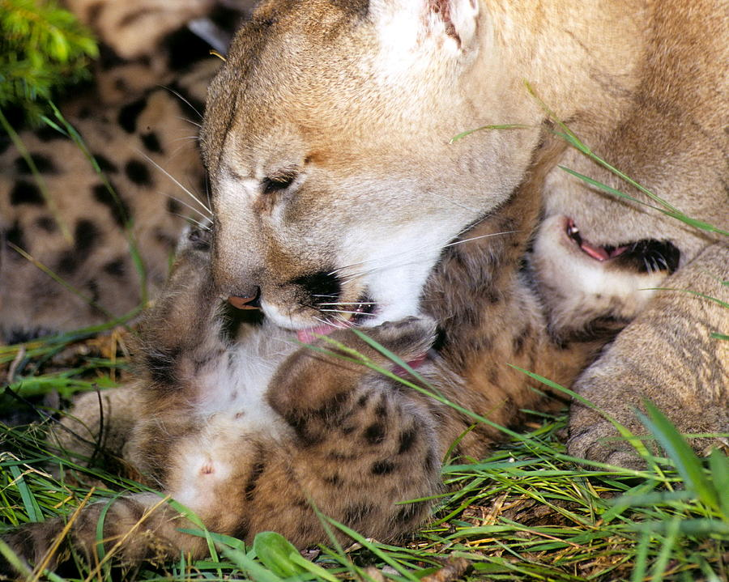
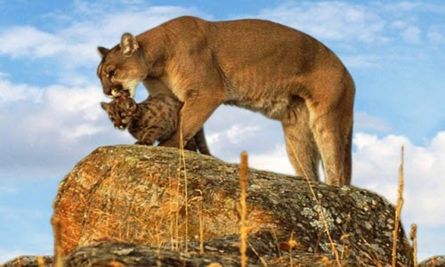
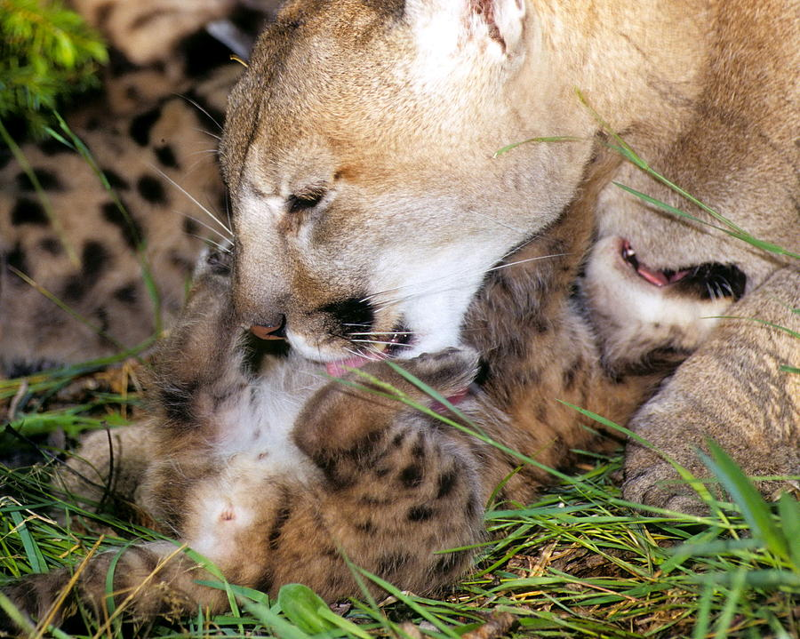
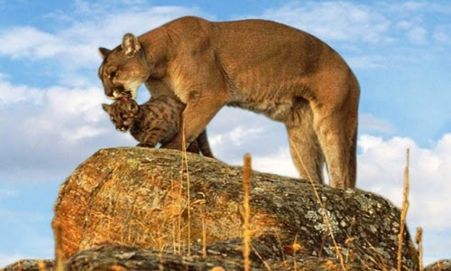

Sección Puma
Volver a InicioPUMA
(Concolor Cabrerae)
Para ver un video, hacer click aquí.
Descripcion
El puma del norte de América del Sur (Puma concolor concolor) es una de las subespecies en que se divide la especie de Puma concolor, denominado comúnmente «puma» o «león de montaña». Esta es la subespecie típica.
El puma adulto presenta una coloración uniforme, sin manchas. Suele haber variaciones dependiendo de la región donde habita: existen ejemplares de color leonado, rojizo, gris con tendencia al rosillo. Los cachorros poseen una serie de manchas y rayas irregulares de color parduzco o negro permitiéndole camuflarse en el ambiente donde estará refugiado. Estos animales pueden llegar a pesar aproximadamente entre 40 y 70 kilos. Es curioso el dato de que el Puma maúlla, no ruge. Con esto podemos decir que el Puma es como un gato grande. El Puma es nombrado de distintas formas según las regiones o las culturas donde podamos encontrarlo: Puma (del quechua); león; león americano, pangui, trapial (en mapuche), yagua pytá (en guaraní); onca vermelha, leao (en Brasil); león bayo (en Uruguay).
Distribución
En la Argentina, actualmente se lo encuentra tanto en las elevadas montañas de la cordillera oriental de Jujuy y Salta como en la llanura del este de San Luis y en el valle de Río Negro; tanto en la selva húmeda Tucumano-Oranense como en las zonas muy áridas. La necesidad de hallar abundante caza y refugio, lo lleva a frecuentar en general la selva más que el campo raso y, cuando le resulta posible, opta por las zonas linderas de los bosques y las llanuras de altas hierbas.
Taxonomía
| REINO: | Animalia (animal) |
|---|---|
| PHYLUM: | Chordata (cordados) |
| SUBPHYLUM: | Vertebrata (vertebrados) |
| CLASE: | Mammalia (mamíferos) |
| INFRACLASE: | Eutheria |
| ORDEN: | Carnívora (carnívoros) |
| FAMILIA: | Felidae (félidos) |
| GÉNERO: | Puma |
| ESPECIE: | Puma concolor |
Comportamiento
El puma pasa la mayor parte del día durmiendo y refugiado en las ramas gruesas de un árbol alto, una cueva o la espesura misma de la vegetación. A la noche, sale a cazar y en ese caso es capaz de recorrer largas distancias. El mal tiempo y las tormentas los mantienen inactivos en lugares rocosos o bajo los árboles y sólo si el hambre se hace sentir abandona su refugio.
Para cazar, acecha a sus presas aproximándose agazapado y oculto entre la vegetación hasta estar muy cerca y encontrar la posibilidad de atraparla gracias a su gran velocidad. El puma come a su presa en el lugar donde la capturó y cuando satisface su hambre, esconde los restos ya sea enterrándolos o tapándolos con ramas. Luego se retira a dormir lejos de donde efectuó la caza y si a la noche siguiente no encuentra una nueva víctima, regresa y desentierra los restos del día anterior.
El puma delimita su territorio por medio de montículos de 10 a 15 cm de altura que forma acumulando hojas y/o ramas. Después orina o defeca sobre ellos para dejar sus señales. De esta manera limita su área de acción con marcas visuales y olfativas así los demás congéneres pueden advertir que ya existe un ejemplar en el área.
Estos animales son de hábitos solitarios. Sólo existe el contacto entre el macho y la hembra durante la breve época de reproducción o durante el largo período de dependencia juvenil, entre la hembra y las crías. A pesar de que cada año nacen de 2 a 4 cachorros, el número de adultos por territorio no varía.

 


